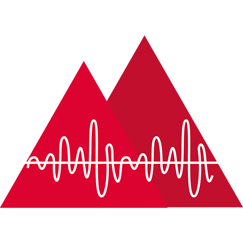

<div class="container" [class]="themeService.themeSignal()">
  <mat-toolbar class="header">
    <a routerLink="/">TechShowcase</a>
    <mat-slide-toggle checked (click)="toggleTheme()"></mat-slide-toggle>
  </mat-toolbar>
  <main>
    <div class="cards-wrapper">
      <a href="https://builtwithangular.dev">
        <mat-card>
          <mat-card-header>
            <mat-card-title>Built With Angular</mat-card-title>
            <mat-card-subtitle>Projects Collection</mat-card-subtitle>
          </mat-card-header>
          <mat-card-content>
            
          </mat-card-content>
        </mat-card>
      </a>
      <a href="https://builtwithanalog.dev">
        <mat-card>
          <mat-card-header>
            <mat-card-title>Built With Analog</mat-card-title>
            <mat-card-subtitle>Projects Collection</mat-card-subtitle>
          </mat-card-header>
          <mat-card-content>
            
          </mat-card-content>
        </mat-card>
      </a>

    </div>
  </main>
  <mat-toolbar class="footer">
    <div class="social">
      <a href="https://github.com/TechShowcase" target="_blank">
        <mat-icon svgIcon="github"></mat-icon>
      </a>
      <a href="https://x.com/builtwithanalog" target="_blank">
        <mat-icon svgIcon="twitter"></mat-icon>
      </a>
    </div>
    <div class="copyright">
      <small>&copy; techshowcase.dev</small>
    </div>
  </mat-toolbar>
</div>
